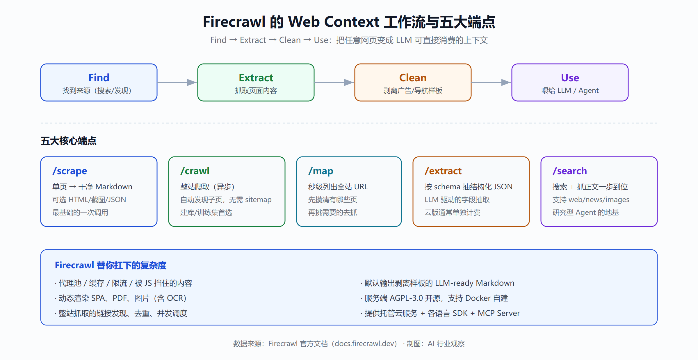
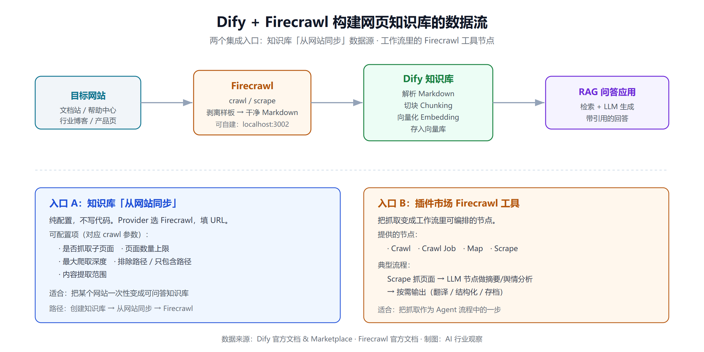

让 Agent 学会上网：Firecrawl 的五大能力与四类应用（RAG、Dify、MCP、深度研究）
大模型的知识停在训练截止那一刻，可互联网每天都在往前跑。让一个 Agent「上网查一下」听起来简单，真正做起来却要处理一堆脏活：JS 渲染、反爬、代理、限流、把满屏导航广告里的正文抠出来、再压成不浪费 token 的格式。Firecrawl 把这些活儿收进一个 API 里——给它一个 URL，还你一段干净的 Markdown。
官方给这件事起了个精炼的名字：Web Context API，工作流四步——Find（找到来源）→ Extract（抽取内容）→ Clean（清洗）→ Use（喂给模型）。到 2026 年，它已经被 35 万+ 开发者用在生产里，客户名单上有 Shopify、Zapier、Replit 这样的公司。更关键的是，它开源、能自建，也已经被 Dify、Cursor、Claude 这些平台原生接了进去。
这篇文章不谈"网页抓取有多难"这种老生常谈，而是把 Firecrawl 拆成两层来看：它能做什么（五大能力），以及它被用在哪里（四类应用）。看完你应该能判断：自己的场景该不该用它，用云版还是自建，以及它和 Crawl4AI、Jina Reader 之间怎么选。
一、先搞清楚：Firecrawl 到底是什么
Firecrawl 由 Mendable.ai 团队开发（项目现已独立为 Firecrawl），定位是面向 AI 应用的网页数据 API。和传统爬虫框架（Scrapy 那类）最大的区别在于输出目标不同：传统爬虫吐给你的是原始 HTML 或需要你自己写规则解析的数据，而 Firecrawl 默认吐给你的是已经剥掉导航、广告、页脚样板、只留正文的 Markdown——也就是所谓「LLM-ready」。
它替你扛下了这些复杂度：
- 代理池、缓存、限流、被 JS 挡住的内容
- 动态渲染站点、SPA、PDF、图片（含 OCR）
- 整站抓取时的链接发现、去重、并发调度
换句话说，它把「拿到一段能让模型直接读的网页正文」这件事做成了一次 API 调用。项目服务端以 AGPL-3.0 开源，同时提供托管云服务——这个「开源 + 托管」的双轨模式，后面讲选型时很重要。
二、五大能力：scrape / crawl / map / extract / search
Firecrawl v2 把功能收敛成五个核心端点，理解了这五个，就理解了它的全部能力边界。

1. scrape：单页 → 干净 Markdown
最基础也最常用的能力。传一个 URL，返回该页的干净 Markdown。除了 Markdown，/scrape 一次调用还能同时返回 HTML、页面链接、截图、摘要、结构化 JSON 等多种格式，由 formats 参数控制。它默认剥离样板内容，是「把一个网页喂给模型」最省心的方式。
一个最小示例（Python SDK）：
from firecrawl import Firecrawl
app = Firecrawl(api_key="fc-YOUR_KEY")
doc = app.scrape("https://example.com/blog/post", formats=["markdown"])
print(doc.markdown)
2. crawl：整站爬取
/scrape 一次只处理一页，但真实需求往往是「把整个文档站/产品目录/博客归档都抓下来」。/crawl 接受一个起始 URL，自动发现并抓取可访问的子页面（不需要 sitemap），把每一页都转成干净 Markdown。想做训练集、想灌一个知识库时，一个 crawl 任务就能搞定成千上万页。
它是异步的：提交任务拿到 job id，再轮询结果。常用控制项包括：是否抓子页、页数上限、最大爬取深度、排除路径、只包含路径——这些参数在 Dify 集成里你会原样看到。
3. map：快速发现站点所有 URL
/map 不抓正文，只做一件事：给一个域名，秒级返回这个站点下能发现的所有 URL 列表。适合先「摸清一个站有哪些页」，再挑需要的页去 scrape，避免盲目全站爬浪费额度。
4. extract：AI 驱动的结构化抽取
前面几个端点给的是正文文本，而 /extract 更进一步：你给一个 schema（比如「我要产品名、价格、库存」），它用 LLM 从页面里把这些字段抽成结构化 JSON。适合做比价、招聘信息聚合、榜单采集这类「要的是字段不是全文」的场景。注意云版里结构化抽取通常是单独计费的。
5. search：搜索 + 抓正文，一次搞定
传统做法是「先调搜索 API 拿链接，再逐个抓正文」两步走。/search 把这两步合并：传一个查询词，直接返回每条结果的标题、URL 和完整页面正文。v2 还支持 sources 参数在 web 之外搜 news 和 images。这个端点是搭「研究型 Agent」的地基——模型自己知识不够时，调一次 search 就把「查 + 读」都做了。
除了这五个，Firecrawl 近期还上了一个 Research Index：一个专为 AI/ML 研究做的索引，可以检索 300 万+ arXiv 论文以及它们背后的 GitHub 代码（issue、合并的 PR、README，每日刷新），并对照全文核查论点。这让它从「通用抓取」往「研究基础设施」延伸了一步。
三、四类应用：它到底被用在哪
能力清单是一回事，落地形态是另一回事。Firecrawl 在实践中主要出现在四类场景里。
应用一：RAG 知识库的数据源
这是最直接的用法。RAG 的第一步永远是「把数据搞进来」，而互联网上的内容——文档站、帮助中心、行业博客——恰恰是最有价值也最难处理的一类。
流程很清晰：crawl 整站 → 得到一批干净 Markdown → 切块（chunking）→ 向量化 → 存进向量库。因为 Firecrawl 的输出已经是干净正文，省掉了自己写 HTML 清洗规则的大量脏活，chunk 质量也更高（没有导航噪声混进去污染检索）。
如果你正在选型 RAG 的各个环节，可以对照着看：向量库怎么挑见 开源向量数据库怎么选，检索策略见 BM25 与向量混合检索，而数据进库后的安全边界见 RAG 数据泄露的四条链路与防御。Firecrawl 解决的是这条链路最上游的「数据获取」。
应用二：Dify 集成
Dify 是国内外都很流行的开源 LLM 应用开发平台，它和 Firecrawl 的集成有两个入口，容易搞混，这里讲清楚。
入口 A：知识库「从网站同步」的数据源
在 Dify 创建知识库时，选择「从网站同步（Sync from website）」，Provider 选 Firecrawl，填入要抓的目标 URL 即可。配置项和 Firecrawl 的 crawl 参数一一对应：
- 是否抓取子页面
- 页面抓取数量上限
- 页面抓取最大深度
- 排除路径 / 只包含路径
- 内容提取范围
Dify 会用 Firecrawl 把网页抓成 Markdown，解析后直接进知识库——这条路适合「我想把某个网站变成一个可问答的知识库」的纯配置场景，不用写一行代码。

入口 B：插件市场的 Firecrawl 工具插件
Dify 插件市场里有官方的 Firecrawl 插件，把 Crawl、Crawl Job、Map、Scrape 等做成了可以在工作流（Workflow）里拖拽调用的节点。这条路更灵活：你可以在一个 Agent 流程里，先用 Scrape 抓某个页面，再把正文丢给 LLM 节点做舆情分析、摘要、翻译，最后按需输出。相比入口 A 的「一次性建库」，入口 B 是「把抓取变成流程中的一个可编排步骤」。
实践中一个常见组合是本地自建 Firecrawl + 本地 Dify：Firecrawl 自建后 API 跑在 http://localhost:3002，Dify 里把 Firecrawl 的 base url 指向本地实例，数据全程不出内网——这对有数据合规要求的团队很关键。想深入了解 Dify 本身以及它和同类平台的差异，可以看 Dify vs Coze/RAGFlow/n8n/FastGPT 横评 和 WeKnora vs Dify/RAGFlow/FastGPT。
应用三：MCP Server，给编程 Agent 装上「联网抓取」
Firecrawl 官方提供了 MCP（Model Context Protocol）Server，能把 scrape / search / extract / map 等能力以标准工具的形式暴露给 Cursor、Claude、Claude Code 等客户端。配好之后，你在 Cursor 里写代码时，AI 可以实时去抓某个库的最新文档、搜一个报错的解法、抽某个页面的结构化数据——而不用你手动复制粘贴文档进去。
MCP 正在成为 AI 编程工具的「联网上下文层」：模型自身知识不够时调用的那个工具。想理解 MCP 这个协议本身以及它和 A2A 的定位差异，可以看 MCP vs A2A：AI Agent 协议深度对比。
应用四：深度研究 Agent
把 /search（查 + 读一步到位）和 /extract（结构化抽取）组合起来，就是一个研究型 Agent 的核心引擎：给一个研究问题 → search 拉回相关页面正文 → LLM 阅读、提炼、交叉验证 → extract 把关键数据结构化 → 生成带引用的报告。配合前面提到的 Research Index，还能直接检索论文和对应代码库。这类 Agent 和「AI 自己上网做调研」的需求高度契合。
四、自建部署：数据不出内网
如果你对数据主权或成本敏感，Firecrawl 支持用 Docker Compose 自建。官方自建指南把流程收敛得很清楚：clone 仓库 → 用 Docker Compose 起服务 → 本地 API 默认监听 http://localhost:3002 → 用一次 POST /v2/scrape 验证能拿到 Markdown 就算成功。
自建的价值主要有三点：
- 数据主权：抓取的内容和请求全程留在自己基础设施里，满足严格的安全合规要求
- 延迟：Agent 调本地端点，延迟以毫秒计，省掉往返公网的时间
- 成本：抓取量大时，自建长期成本可能低于云版的按量计费
代价是要自己运维——Chrome/Playwright 依赖、代理配置、扩容都得自己扛。强反爬的目标站点上，自建版和云版一样会遇到成功率问题（下面详说）。
五、竞品取舍：Firecrawl、Crawl4AI、Jina Reader 怎么选
同一赛道里最常被拿来比较的是这三个，它们其实站在不同位置。
- Firecrawl：API 优先，「买而不建」。scrape/crawl/map/extract/search 一套齐全，生态最好（Dify、MCP、各语言 SDK），也支持自建。适合想少写代码、快速上线、又保留私有化选项的团队。协议是服务端 AGPL-3.0，商用集成时要注意其传染性。
- Crawl4AI：Apache-2.0 的纯自托管 Python 库，零成本，但一切自己运维。适合工程能力强、愿意自己搭建和维护整条抓取链路、且在意协议宽松度的团队。
- Jina Reader：轻量，对静态文档站尤其友好（一个 URL 前缀就能读）。但在整站爬取、JS 渲染、结构化抽取这些重活上不如 Firecrawl 全面。
一个需要如实说明的短板：在第三方独立评测（Proxyway 于 2025 年底、由 Zyte 汇总的基准）中，Firecrawl 在 15 个有反爬保护的站点、每站 6000 页的测试里，2 req/s 时成功率约 33.69%，10 req/s 时降到 26.69%，而榜首选手达到 93.14%，差距接近三倍。也就是说，面对强反爬的目标站点，Firecrawl 的成功率并不突出——它的强项在「常规网页转 LLM-ready 数据」的易用性和生态，而非硬刚顶级反爬。如果你的核心需求就是攻克重度反爬站点，需要另做评估。
选型上给个简单判断：想快速接入、要 Dify/MCP 生态、能接受按量付费或愿意自建 → Firecrawl；想完全零成本自己掌控、协议要宽松 → Crawl4AI；只是偶尔把静态文档转 Markdown → Jina Reader 够用。
六、成本参考
云版免费额度为每月 1000 credits（近期还推出了无需 API key 即可使用的免费模式，每个开发者每月自动获得 1000 免费 credits）。付费分 Hobby / Standard / Growth / Scale 多档，credits 数和速率上限逐档提升。
需要注意两点：一是 credits 不结转，当月用不完就过期；二是结构化抽取（extract）通常另计费。据第三方汇总，Standard 档约 $83/月对应 10 万 credits，叠加抽取后实际常来到 $172–188/月起。抓取量稳定且较大时，自建往往更划算——这也是很多团队最终走向自建的原因。
小结
Firecrawl 的价值不在于「能抓网页」——能抓网页的工具很多——而在于它把「网页 → LLM 可直接消费的干净数据」这条链路做成了一次 API 调用，并围绕这个能力长出了 Dify、MCP、各类 SDK 的完整生态。
回到最初的判断：
- 你的场景是给 RAG 灌网页数据、在 Dify 里建网页知识库、给编程 Agent 装联网能力，或搭研究型 Agent → Firecrawl 是当前最省心的选择之一，尤其 Dify 的双入口集成让「配置即可用」和「工作流可编排」两种需求都被覆盖。
- 你在意数据主权或大规模成本 → 自建 Docker Compose，把 API 留在内网。
- 你要硬刚重度反爬站点 → 它不是最强的，另做评估。
一句话：Firecrawl 让 Agent「学会上网」这件事，从一堆脏活变成了一个端点。剩下的问题，是你想把这个端点接在 RAG、Dify、MCP，还是研究 Agent 上。
免责声明
本文基于 2026 年 9 月公开资料整理，Firecrawl 的功能、端点、定价及第三方评测数据可能随版本更新而变化，具体请以官方文档与实际测试为准。文中提及的成功率基准来自第三方独立评测，不代表所有场景下的表现。技术选型请结合自身数据合规要求、目标站点特征和团队工程能力综合判断。
参考来源
- Firecrawl 官网
- Firecrawl GitHub 仓库
- Firecrawl 文档 - Scrape 功能
- Firecrawl 文档 - Search 功能
- Firecrawl 文档 - JSON mode / LLM Extract
- Firecrawl 文档 - 自建部署指南
- Firecrawl 文档 - Dify 集成
- Firecrawl Releases（含 Research Index）
- Dify 文档 - 从网站导入数据
- Dify Marketplace - Firecrawl 数据源插件
- Dify.AI x Firecrawl 博客
- Crawl4AI vs Firecrawl（Scrappey）
- Best Firecrawl Alternatives 2026（含 Proxyway 基准汇总）
- Firecrawl 无 key 免费使用发布公告
- Deploy & Host Firecrawl API（Railway，含定价参考）
延伸阅读
- Dify vs Coze/RAGFlow/n8n/FastGPT 横评
- WeKnora vs Dify/RAGFlow/FastGPT
- MCP vs A2A：AI Agent 协议深度对比
- 开源向量数据库怎么选
- BM25 与向量混合检索
- RAG 数据泄露的四条链路与防御
推荐搭配装备
善其事，利其器。以下硬件能最大化你的AI体验👇
🔗 通过以上链接购买可支持本站持续运营 🙏